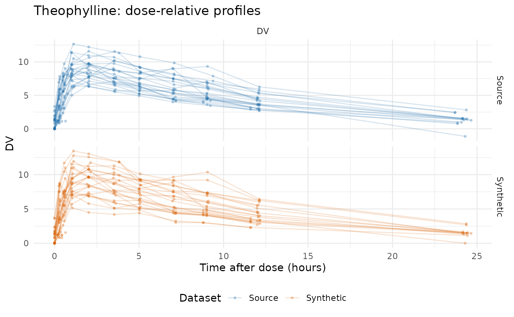
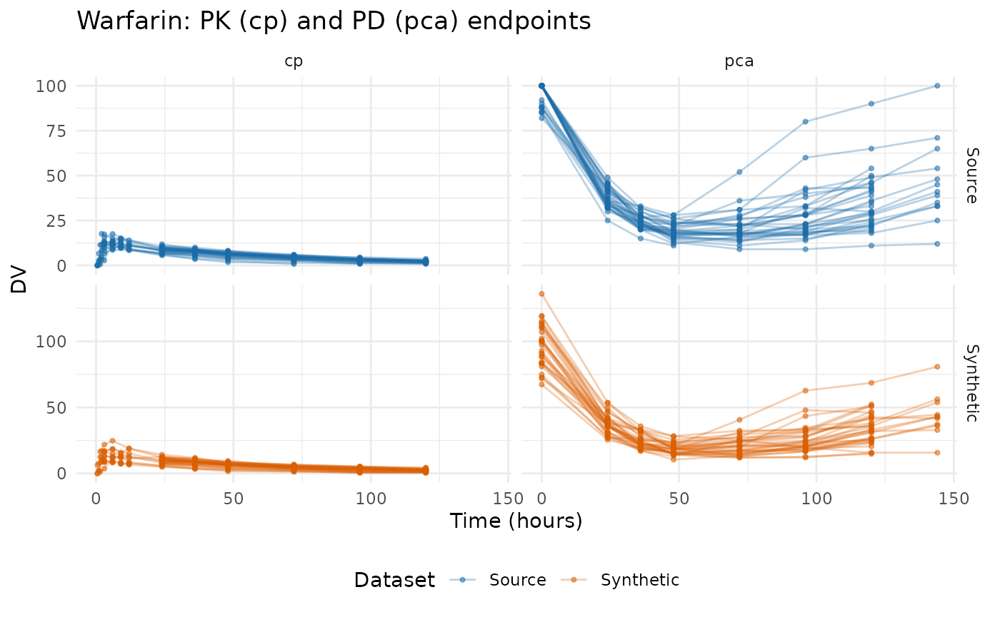
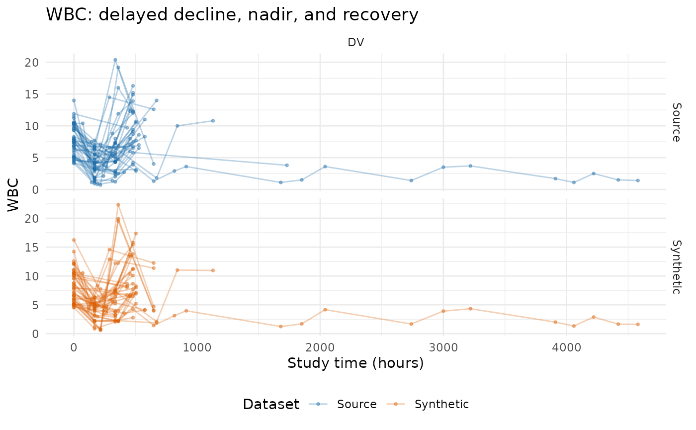
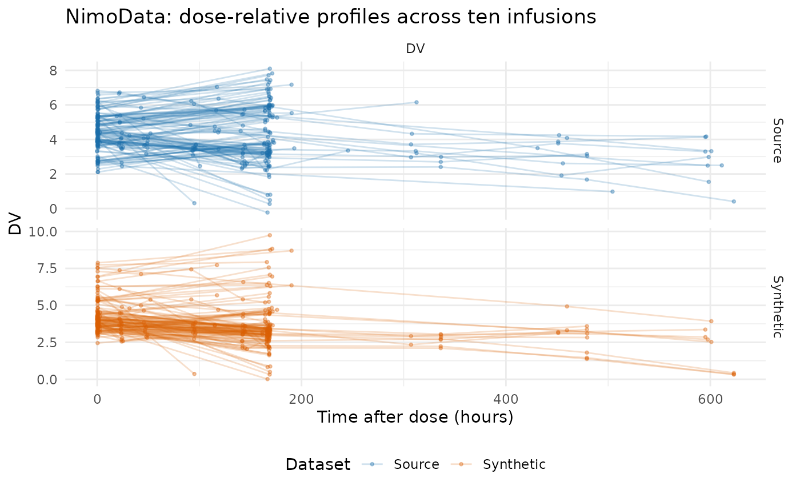
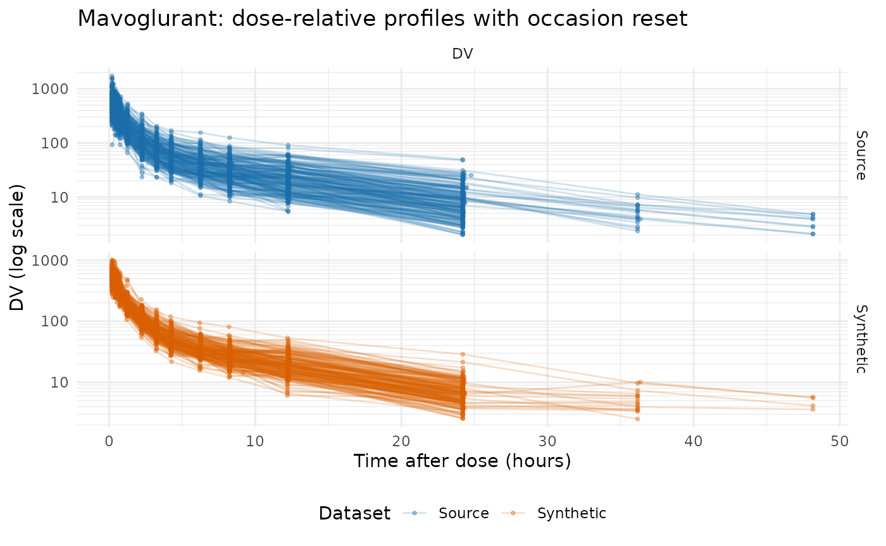
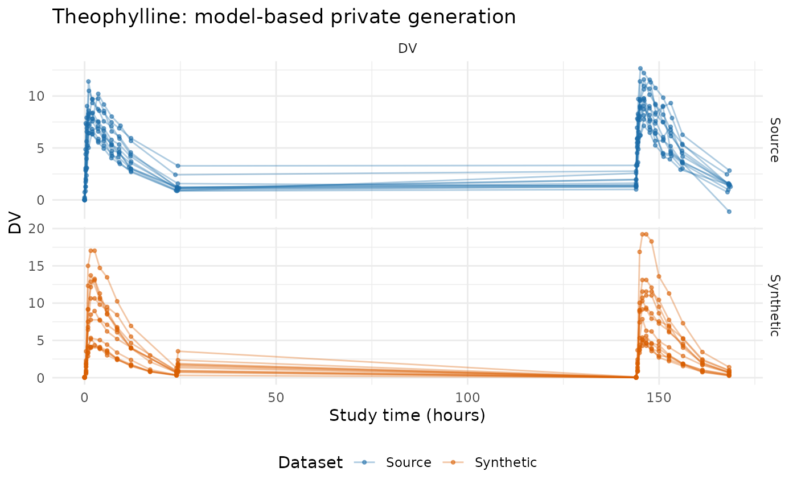

This vignette compares five source datasets against their synthetic counterparts, so it needs a few helpers to pull observed rows into a common shape and plot them. They are ordinary plotting code, not part of the package API; expand the block if you want to reuse them.
Plotting helpers used throughout this vignette
observed_plot_data <- function(data, roles, dataset,
clock = "study_time") {
observed <- as.character(data[[roles$evid]]) %in% c("0", "0.0")
if (!is.null(roles$mdv)) {
observed <- observed & as.character(data[[roles$mdv]]) %in% c("0", "0.0")
}
observed <- observed & !is.na(data[[roles$dv]])
observation_rows <- which(observed)
occasion <- rep(1L, length(observation_rows))
tad <- rep(NA_real_, length(observation_rows))
if (!is.null(roles$occasion)) {
declared <- suppressWarnings(as.integer(
data[[roles$occasion]][observation_rows]
))
valid <- !is.na(declared) & declared >= 1L
occasion[valid] <- declared[valid]
}
if (!is.null(roles$tad)) {
declared <- suppressWarnings(as.numeric(data[[roles$tad]][observation_rows]))
valid <- is.finite(declared)
tad[valid] <- pmax(0, declared[valid])
}
subject_values <- data[[roles$id]]
for (id in unique(subject_values[observation_rows])) {
subject_rows <- which(!is.na(subject_values) & subject_values == id)
events <- !(as.character(data[[roles$evid]][subject_rows]) %in%
c("0", "0.0"))
if (!is.null(roles$amt)) {
events <- events & as.numeric(data[[roles$amt]][subject_rows]) > 0
}
positions <- which(subject_values[observation_rows] == id)
event_rows <- subject_rows[events]
if (length(event_rows) && !is.null(roles$occasion)) {
event_occasion <- suppressWarnings(as.integer(
data[[roles$occasion]][event_rows]
))
for (position in positions) {
candidates <- event_rows[event_occasion == occasion[position]]
if (length(candidates) && !is.finite(tad[position])) {
origin <- min(as.numeric(data[[roles$time]][candidates]))
tad[position] <-
as.numeric(data[[roles$time]][observation_rows[position]]) - origin
}
}
} else if (length(event_rows)) {
dose_times <- sort(unique(as.numeric(data[[roles$time]][event_rows])))
occasion[positions] <- pmax(1L, findInterval(
as.numeric(data[[roles$time]][observation_rows[positions]]),
dose_times
))
occasion[positions] <- pmin(occasion[positions], length(dose_times))
tad[positions] <-
as.numeric(data[[roles$time]][observation_rows[positions]]) -
dose_times[occasion[positions]]
}
}
plotted_time <- if (identical(clock, "tad")) tad else
as.numeric(data[[roles$time]][observation_rows])
data.frame(
dataset = factor(dataset, levels = c("Source", "Synthetic")),
subject = as.character(data[[roles$id]][observation_rows]),
time = plotted_time,
dv = as.numeric(data[[roles$dv]][observation_rows]),
occasion = occasion,
endpoint = if (is.null(roles$dvid)) "DV" else
as.character(data[[roles$dvid]][observation_rows]),
stringsAsFactors = FALSE
)
}
tad_plot_data <- function(data, roles, dataset) {
out <- observed_plot_data(data, roles, dataset, clock = "tad")
names(out)[names(out) == "time"] <- "tad"
out
}
demo_design_summary <- function(data, roles, dataset, time_bounds,
clock = "study_time") {
plotted <- observed_plot_data(data, roles, dataset, clock)
if (!identical(clock, "tad")) {
plotted <- plotted[
plotted$time >= time_bounds[1L] & plotted$time <= time_bounds[2L],
, drop = FALSE
]
}
cohort_ids <- as.character(unique(data[[roles$id]]))
pieces <- lapply(sort(unique(plotted$endpoint)), function(endpoint) {
rows <- plotted[plotted$endpoint == endpoint, , drop = FALSE]
counts <- table(factor(rows$subject, levels = cohort_ids))
data.frame(
dataset = dataset,
endpoint = endpoint,
patients = length(cohort_ids),
patients_with_endpoint = sum(counts > 0),
observations = nrow(rows),
mean_time_points_per_patient = mean(counts),
median_time_points_per_patient = stats::median(counts),
first_time = min(rows$time),
last_time = max(rows$time),
stringsAsFactors = FALSE
)
})
do.call(rbind, pieces)
}
check_demo_similarity <- function(source, synthetic, roles, time_bounds,
label, clock = "study_time") {
source_subjects <- length(unique(source[[roles$id]]))
synthetic_subjects <- length(unique(synthetic[[roles$id]]))
if (source_subjects != synthetic_subjects) {
stop(label, ": source and synthetic patient counts differ (",
source_subjects, " versus ", synthetic_subjects, ").")
}
source_summary <- demo_design_summary(
source, roles, "Source", time_bounds, clock
)
synthetic_summary <- demo_design_summary(
synthetic, roles, "Synthetic", time_bounds, clock
)
if (!setequal(source_summary$endpoint, synthetic_summary$endpoint)) {
stop(label, ": source and synthetic endpoint sets differ.")
}
paired <- merge(
source_summary, synthetic_summary, by = "endpoint",
suffixes = c("_source", "_synthetic")
)
point_difference <- abs(
paired$mean_time_points_per_patient_synthetic -
paired$mean_time_points_per_patient_source
)
point_allowance <- pmax(
1, 0.25 * paired$mean_time_points_per_patient_source
)
if (any(point_difference > point_allowance)) {
stop(label, ": mean time points per patient differ materially for ",
paste(paired$endpoint[point_difference > point_allowance],
collapse = ", "), ".")
}
coverage_allowance <- 0.20 * diff(time_bounds)
bad_coverage <-
abs(paired$first_time_synthetic - paired$first_time_source) >
coverage_allowance |
abs(paired$last_time_synthetic - paired$last_time_source) >
coverage_allowance
if (any(bad_coverage)) {
stop(label, ": source and synthetic time coverage differs materially for ",
paste(paired$endpoint[bad_coverage], collapse = ", "), ".")
}
summary <- rbind(source_summary, synthetic_summary)
summary$dataset <- factor(
summary$dataset, levels = c("Source", "Synthetic")
)
summary[order(summary$dataset, summary$endpoint), , drop = FALSE]
}
comparison_facets <- function(data) {
ggplot2::facet_grid(dataset ~ endpoint, scales = "free_y")
}
source_synthetic_preview <- function(source, synthetic, n = 6L) {
columns <- intersect(names(source), names(synthetic))
source_rows <- utils::head(source[, columns, drop = FALSE], n)
synthetic_rows <- utils::head(synthetic[, columns, drop = FALSE], n)
source_rows$.dataset <- "Source"
synthetic_rows$.dataset <- "Synthetic"
out <- rbind(source_rows, synthetic_rows)
rownames(out) <- NULL
out[, c(".dataset", columns), drop = FALSE]
}What this package is for
synpmx creates synthetic pharmacometric data for
model-workflow exploration: data to develop and debug cleaning,
joins, reshaping, plotting, control-file plumbing, and repeated-dose or
longitudinal analysis code, so that a pipeline runs unchanged against
the real data later.
The package offers four generation modes, and the “Introduction to synpmx” vignette applies all four to one dataset side by side:
-
AVATAR blending (
synthesize_pmx()) — build each synthetic subject from real subjects. No elicitation, no formal privacy guarantee. -
Prior only (
pmx_generate()on a public structural model) — read no data at all. -
Calibration (
fit_calibrated_pmx()) — simulate from a public structural model whose magnitude is corrected by a small differentially private release. -
Empirical (
fit_private_pmx()) — release a dense set of differentially private summaries and rebuild subjects from them.
Most of this vignette is about the default, AVATAR
blending, applied to five public datasets with different
structural challenges. For each generated subject it samples a
compatible source subject’s event skeleton as a template, then fills the
covariates and endpoint trajectories with a distance-weighted blend of
similar subjects, plus subject and residual noise. The output has the
source schema, fresh identifiers, and the same cohort size. The final
section runs the model-based path on the same theophylline data, as
scripts/demo_nlmixr2data.R does for all five.
AVATAR output is not anonymous and carries
no formal privacy guarantee. It is synthetic data for a
trusted computing environment, in the same spirit as Novartis’s
synadam (which resamples each column marginally from the
data). It is not appropriate for parameter estimation, inference, model
selection, or clinical decisions. When the generated data must cross a
trust boundary, use one of the differentially private modes instead;
vignette("synpmx-privacy") works through that decision and
the tradeoff behind it.
Shared workflow
Every example follows the same three steps:
- declare column meanings with
pmx_roles(); - synthesize with
synthesize_pmx(); - validate structure with
validate_pmx()and compare to the source.
Identifiers, schema, classes, and factor levels are restored on
output. The caller’s random-number state is left untouched;
reproducibility comes from the seed argument.
Theophylline: repeated dosing, dose-relative PK
theo_md has 12 subjects on a repeated oral regimen with
a single concentration endpoint.
data("theo_md", package = "nlmixr2data")
theo_roles <- pmx_roles(
id = "ID", time = "TIME", dv = "DV", amt = "AMT",
evid = "EVID", cmt = "CMT", covariates = "WT"
)
theo_synth <- synthesize_pmx(theo_md, theo_roles, seed = 303)
#> Warning: Synthetic generation used documented small-group/profile fallbacks:
#> - `k` was reduced to 1 in at least one compatible event-pattern group.
#> - A compatible event-pattern group supplied fewer than two non-anchor donors.
#> - A compatible event-pattern group contained only its anchor; the anchor was used as the sole measurement donor and randomized noise supplied the only trajectory perturbation.
validate_pmx(theo_synth, theo_roles)$valid
#> [1] TRUE
knitr::kable(
source_synthetic_preview(theo_md, theo_synth),
caption = "Actual Theophylline rows and synthesized rows"
)| .dataset | ID | TIME | DV | AMT | EVID | CMT | WT |
|---|---|---|---|---|---|---|---|
| Source | 1 | 0.00 | 0.0000000 | 319.992 | 101 | 1 | 79.60000 |
| Source | 1 | 0.00 | 0.7400000 | 0.000 | 0 | 2 | 79.60000 |
| Source | 1 | 0.25 | 2.8400000 | 0.000 | 0 | 2 | 79.60000 |
| Source | 1 | 0.57 | 6.5700000 | 0.000 | 0 | 2 | 79.60000 |
| Source | 1 | 1.12 | 10.5000000 | 0.000 | 0 | 2 | 79.60000 |
| Source | 1 | 2.02 | 9.6600000 | 0.000 | 0 | 2 | 79.60000 |
| Synthetic | 13 | 0.00 | 0.0000000 | 319.365 | 101 | 1 | 70.37768 |
| Synthetic | 13 | 0.00 | 0.0114675 | 0.000 | 0 | 2 | 70.37768 |
| Synthetic | 13 | 0.27 | 3.5907442 | 0.000 | 0 | 2 | 70.37768 |
| Synthetic | 13 | 0.58 | 4.0689484 | 0.000 | 0 | 2 | 70.37768 |
| Synthetic | 13 | 1.02 | 8.7113683 | 0.000 | 0 | 2 | 70.37768 |
| Synthetic | 13 | 2.02 | 8.4550748 | 0.000 | 0 | 2 | 70.37768 |
knitr::kable(
check_demo_similarity(theo_md, theo_synth, theo_roles, c(0, 170),
"Theophylline"),
digits = 2, caption = "Theophylline cohort and sampling-design checks"
)| dataset | endpoint | patients | patients_with_endpoint | observations | mean_time_points_per_patient | median_time_points_per_patient | first_time | last_time |
|---|---|---|---|---|---|---|---|---|
| Source | DV | 12 | 12 | 264 | 22 | 22 | 0 | 168.65 |
| Synthetic | DV | 12 | 12 | 264 | 22 | 22 | 0 | 168.65 |
theo_comparison <- rbind(
observed_plot_data(theo_md, theo_roles, "Source"),
observed_plot_data(theo_synth, theo_roles, "Synthetic")
)
ggplot2::ggplot(
theo_comparison,
ggplot2::aes(time, dv, group = interaction(dataset, subject),
colour = dataset)
) +
ggplot2::geom_line(alpha = 0.35) +
ggplot2::geom_point(alpha = 0.55, size = 0.8) +
comparison_facets(theo_comparison) +
ggplot2::scale_colour_manual(values = comparison_colours) +
ggplot2::labs(
x = "Study time (hours)", y = "DV", colour = "Dataset",
title = "Theophylline: source and synthetic data"
) +
ggplot2::theme_minimal() +
ggplot2::theme(legend.position = "bottom")
A dose-relative display makes the coarse curve shape easier to see. AVATAR preserves the rise-and-fall because it blends real subject profiles rather than inventing a shape.
theo_tad <- rbind(
tad_plot_data(theo_md, theo_roles, "Source"),
tad_plot_data(theo_synth, theo_roles, "Synthetic")
)
ggplot2::ggplot(
theo_tad,
ggplot2::aes(tad, dv, group = interaction(dataset, subject, occasion),
colour = dataset)
) +
ggplot2::geom_line(alpha = 0.18) +
ggplot2::geom_point(alpha = 0.25, size = 0.7) +
comparison_facets(theo_tad) +
ggplot2::scale_colour_manual(values = comparison_colours) +
ggplot2::labs(
x = "Time after dose (hours)", y = "DV", colour = "Dataset",
title = "Theophylline: dose-relative profiles"
) +
ggplot2::theme_minimal() +
ggplot2::theme(legend.position = "bottom")
Warfarin: separate PK and PD endpoints
warfarin has a lower-case schema, one dose, and two
endpoints (cp and pca) with factor covariates.
Both endpoints and all subjects are retained.
data("warfarin", package = "nlmixr2data")
warfarin_roles <- pmx_roles(
id = "id", time = "time", dv = "dv", amt = "amt", evid = "evid",
dvid = "dvid", covariates = c("wt", "age", "sex")
)
warfarin_synth <- synthesize_pmx(warfarin, warfarin_roles, seed = 404)
#> Warning: Synthetic generation used documented small-group/profile fallbacks:
#> - A compatible event-pattern group contained only its anchor; the anchor was used as the sole measurement donor and randomized noise supplied the only trajectory perturbation.
#> - `k` was reduced to 1 in at least one compatible event-pattern group.
#> - A compatible event-pattern group supplied fewer than two non-anchor donors.
#> - `k` was reduced to 3 in at least one compatible event-pattern group.
#> - `k` was reduced to 2 in at least one compatible event-pattern group.
validate_pmx(warfarin_synth, warfarin_roles)$valid
#> [1] TRUE
knitr::kable(
source_synthetic_preview(warfarin, warfarin_synth),
caption = "Actual Warfarin rows and synthesized rows"
)| .dataset | id | time | amt | dv | dvid | evid | wt | age | sex |
|---|---|---|---|---|---|---|---|---|---|
| Source | 1 | 0.0 | 100 | 0.00000 | cp | 1 | 66.70000 | 50 | male |
| Source | 1 | 0.5 | 0 | 0.00000 | cp | 0 | 66.70000 | 50 | male |
| Source | 1 | 1.0 | 0 | 1.90000 | cp | 0 | 66.70000 | 50 | male |
| Source | 1 | 2.0 | 0 | 3.30000 | cp | 0 | 66.70000 | 50 | male |
| Source | 1 | 3.0 | 0 | 6.60000 | cp | 0 | 66.70000 | 50 | male |
| Source | 1 | 6.0 | 0 | 9.10000 | cp | 0 | 66.70000 | 50 | male |
| Synthetic | 34 | 0.0 | 123 | 0.00000 | cp | 1 | 82.10065 | 31 | male |
| Synthetic | 34 | 0.0 | 0 | 136.01276 | pca | 0 | 82.10065 | 31 | male |
| Synthetic | 34 | 1.5 | 0 | 16.53175 | cp | 0 | 82.10065 | 31 | male |
| Synthetic | 34 | 3.0 | 0 | 21.84664 | cp | 0 | 82.10065 | 31 | male |
| Synthetic | 34 | 6.0 | 0 | 24.79523 | cp | 0 | 82.10065 | 31 | male |
| Synthetic | 34 | 12.0 | 0 | 18.90499 | cp | 0 | 82.10065 | 31 | male |
knitr::kable(
check_demo_similarity(warfarin, warfarin_synth, warfarin_roles, c(0, 130),
"Warfarin"),
digits = 2, caption = "Warfarin cohort and endpoint checks"
)| dataset | endpoint | patients | patients_with_endpoint | observations | mean_time_points_per_patient | median_time_points_per_patient | first_time | last_time |
|---|---|---|---|---|---|---|---|---|
| Source | cp | 32 | 32 | 251 | 7.84 | 6 | 0.5 | 120 |
| Source | pca | 32 | 32 | 219 | 6.84 | 7 | 0.0 | 120 |
| Synthetic | cp | 32 | 32 | 243 | 7.59 | 6 | 0.5 | 120 |
| Synthetic | pca | 32 | 32 | 222 | 6.94 | 7 | 0.0 | 120 |
warfarin_comparison <- rbind(
observed_plot_data(warfarin, warfarin_roles, "Source"),
observed_plot_data(warfarin_synth, warfarin_roles, "Synthetic")
)
ggplot2::ggplot(
warfarin_comparison,
ggplot2::aes(time, dv, group = interaction(dataset, subject),
colour = dataset)
) +
ggplot2::geom_line(alpha = 0.3) +
ggplot2::geom_point(alpha = 0.5, size = 0.8) +
comparison_facets(warfarin_comparison) +
ggplot2::scale_colour_manual(values = comparison_colours) +
ggplot2::labs(
x = "Time (hours)", y = "DV", colour = "Dataset",
title = "Warfarin: PK (cp) and PD (pca) endpoints"
) +
ggplot2::theme_minimal() +
ggplot2::theme(legend.position = "bottom")
WBC: infusion and a delayed response
wbcSim has infusion start/stop events and a study-time
white-blood-cell response with a delayed decline, nadir, and recovery.
Some source dosing schedules are unique; when a compatible event-pattern
group contains only its anchor, synthesize_pmx() uses that
anchor as the sole donor and randomized noise supplies the perturbation,
which it reports through a warning.
data("wbcSim", package = "nlmixr2data")
wbc_roles <- pmx_roles(
id = "ID", time = "TIME", dv = "DV", amt = "AMT", evid = "EVID", cmt = "CMT"
)
wbc_synth <- suppressWarnings(synthesize_pmx(wbcSim, wbc_roles, seed = 505))
validate_pmx(wbc_synth, wbc_roles)$valid
#> [1] TRUE
knitr::kable(
check_demo_similarity(wbcSim, wbc_synth, wbc_roles, c(0, 720), "WBC"),
digits = 2, caption = "WBC cohort and follow-up checks"
)| dataset | endpoint | patients | patients_with_endpoint | observations | mean_time_points_per_patient | median_time_points_per_patient | first_time | last_time |
|---|---|---|---|---|---|---|---|---|
| Source | DV | 45 | 45 | 160 | 3.56 | 4 | 0 | 672 |
| Synthetic | DV | 45 | 45 | 152 | 3.38 | 4 | 0 | 672 |
wbc_comparison <- rbind(
observed_plot_data(wbcSim, wbc_roles, "Source"),
observed_plot_data(wbc_synth, wbc_roles, "Synthetic")
)
ggplot2::ggplot(
wbc_comparison,
ggplot2::aes(time, dv, group = interaction(dataset, subject),
colour = dataset)
) +
ggplot2::geom_line(alpha = 0.3) +
ggplot2::geom_point(alpha = 0.4, size = 0.7) +
comparison_facets(wbc_comparison) +
ggplot2::scale_colour_manual(values = comparison_colours) +
ggplot2::labs(
x = "Study time (hours)", y = "WBC", colour = "Dataset",
title = "WBC: delayed decline, nadir, and recovery"
) +
ggplot2::theme_minimal() +
ggplot2::theme(legend.position = "bottom")
NimoData: infusions, occasions, and a dose group
nimoData has ten approximately weekly infusions,
declared OCC/TAD, a nominal dose group (DOS), and a
time-varying weight column that is excluded. The dose group is carried
as a subject property.
data("nimoData", package = "nlmixr2data")
nimo_roles <- pmx_roles(
id = "ID", time = "TIME", dv = "DV", amt = "AMT", evid = "EVID",
rate = "RATE", mdv = "MDV", tad = "TAD", occasion = "OCC",
covariates = c("BSA", "AGE", "HGT"), subject_properties = "DOS",
exclude = "WGT"
)
nimo_synth <- suppressWarnings(synthesize_pmx(nimoData, nimo_roles, seed = 606))
validate_pmx(nimo_synth, nimo_roles)$valid
#> [1] TRUE
knitr::kable(
check_demo_similarity(nimoData, nimo_synth, nimo_roles, c(0, 3000),
"NimoData", clock = "tad"),
digits = 2, caption = "NimoData cohort and infusion checks"
)| dataset | endpoint | patients | patients_with_endpoint | observations | mean_time_points_per_patient | median_time_points_per_patient | first_time | last_time |
|---|---|---|---|---|---|---|---|---|
| Source | DV | 12 | 12 | 321 | 26.75 | 27 | 0 | 623.03 |
| Synthetic | DV | 12 | 12 | 325 | 27.08 | 27 | 0 | 623.03 |
nimo_comparison <- rbind(
tad_plot_data(nimoData, nimo_roles, "Source"),
tad_plot_data(nimo_synth, nimo_roles, "Synthetic")
)
ggplot2::ggplot(
nimo_comparison,
ggplot2::aes(tad, dv, group = interaction(dataset, subject, occasion),
colour = dataset)
) +
ggplot2::geom_line(alpha = 0.2) +
ggplot2::geom_point(alpha = 0.35, size = 0.7) +
comparison_facets(nimo_comparison) +
ggplot2::scale_colour_manual(values = comparison_colours) +
ggplot2::labs(
x = "Time after dose (hours)", y = "DV", colour = "Dataset",
title = "NimoData: dose-relative profiles across ten infusions"
) +
ggplot2::theme_minimal() +
ggplot2::theme(legend.position = "bottom")
Mavoglurant: occasion-reset clock and assigned dose
mavoglurant has one- and two-period profiles, a
TIME axis that resets within occasion, an occasion-varying
assigned DOSE, numeric-coded SEX, and infusion
rows. The reset clock validates within ID and occasion.
data("mavoglurant", package = "nlmixr2data")
mavo_roles <- pmx_roles(
id = "ID", time = "TIME", dv = "DV", amt = "AMT", evid = "EVID",
cmt = "CMT", rate = "RATE", mdv = "MDV", occasion = "OCC",
assigned_dose = "DOSE", covariates = c("AGE", "SEX", "WT", "HT")
)
mavo_synth <- suppressWarnings(synthesize_pmx(mavoglurant, mavo_roles,
seed = 707))
validate_pmx(mavo_synth, mavo_roles)$valid
#> [1] TRUE
knitr::kable(
check_demo_similarity(mavoglurant, mavo_synth, mavo_roles, c(0, 120),
"Mavoglurant", clock = "tad"),
digits = 2, caption = "Mavoglurant cohort and occasion checks"
)| dataset | endpoint | patients | patients_with_endpoint | observations | mean_time_points_per_patient | median_time_points_per_patient | first_time | last_time |
|---|---|---|---|---|---|---|---|---|
| Source | DV | 120 | 120 | 2427 | 20.23 | 24 | 0.2 | 48.17 |
| Synthetic | DV | 120 | 120 | 2312 | 19.27 | 24 | 0.2 | 48.17 |
mavo_comparison <- rbind(
tad_plot_data(mavoglurant, mavo_roles, "Source"),
tad_plot_data(mavo_synth, mavo_roles, "Synthetic")
)
mavo_plot <- ggplot2::ggplot(
mavo_comparison,
ggplot2::aes(tad, dv, group = interaction(dataset, subject, occasion),
colour = dataset)
) +
ggplot2::geom_line(alpha = 0.2) +
ggplot2::geom_point(alpha = 0.35, size = 0.7) +
comparison_facets(mavo_comparison) +
ggplot2::scale_colour_manual(values = comparison_colours) +
ggplot2::labs(
x = "Time after dose (hours)", y = "DV (log scale)", colour = "Dataset",
title = "Mavoglurant: dose-relative profiles with occasion reset"
) +
ggplot2::theme_minimal() +
ggplot2::theme(legend.position = "bottom")
# Mavoglurant concentrations span orders of magnitude, so a log y axis reads
# better. Use xgxr's log scale when available, otherwise a plain log10 scale.
mavo_plot + if (requireNamespace("xgxr", quietly = TRUE)) {
xgxr::xgx_scale_y_log10()
} else {
ggplot2::scale_y_log10()
}
The model-based path on the same data
Everything above blends real subjects. The alternative is to fit a
public model to the data through an accounted release and simulate from
it, which is what scripts/demo_nlmixr2data.R does for all
five datasets. Repeating it here for theophylline shows how much more
must be declared, and what is bought.
The empirical engine measures the trajectory shape from the data through noised summaries. Every clipping range, contribution limit, and budget share is an explicit public input:
theo_empirical <- fit_private_pmx(
data = theo_md, roles = theo_roles,
endpoints = list(cp = pmx_endpoint(
alignment = "dose_relative", transform = "log", shape = "occasion", cmt = 2
)),
epsilon = 5, delta = 0,
bounds = pmx_bounds(
time = c(0, 170), endpoints = list(cp = c(0, 30)), amt = c(0, 500),
covariates = list(WT = c(40, 130))
),
public_design = pmx_public_design(
pmx_schema(theo_md), dose_evid = 101, dose_cmt = 1
),
contribution_limits = pmx_contribution_limits(40, 8, 8, 30, 11),
budget_allocation = pmx_budget_allocation(
subject_count = 0.10, event = 0.15, timing = 0.15,
covariates = 0.10, endpoints = 0.50, censoring = 0
),
backend = "public", public_source = TRUE # theo_md is public; no DP claim
)
theo_private <- generate_pmx(theo_empirical, seed = 707)
validate_pmx(theo_private, theo_roles)$valid
#> [1] TRUE
sampling_summary(theo_empirical)
#> endpoint occasion sampling_probability observations_if_sampled
#> 1 cp 1 1.0000000 10.16667
#> 2 cp 2 0.8333333 1.00000
#> 3 cp 3 0.0000000 0.00000
#> 4 cp 4 0.0000000 0.00000
#> 5 cp 5 0.0000000 0.00000
#> 6 cp 6 0.0000000 0.00000
#> 7 cp 7 1.0000000 11.00000
#> expected_observations basis
#> 1 10.1666667 privacy_accounted_inference
#> 2 0.8333333 privacy_accounted_inference
#> 3 0.0000000 privacy_accounted_inference
#> 4 0.0000000 privacy_accounted_inference
#> 5 0.0000000 privacy_accounted_inference
#> 6 0.0000000 privacy_accounted_inference
#> 7 11.0000000 privacy_accounted_inferenceThe fit reads the data once; generation is post-processing, so any number of datasets can be drawn from one release without spending more budget.
theo_private_comparison <- rbind(
observed_plot_data(theo_md, theo_roles, "Source"),
observed_plot_data(theo_private, theo_roles, "Synthetic")
)
ggplot2::ggplot(
theo_private_comparison,
ggplot2::aes(time, dv, group = interaction(dataset, subject),
colour = dataset)
) +
ggplot2::geom_line(alpha = 0.35) +
ggplot2::geom_point(alpha = 0.55, size = 0.8) +
comparison_facets(theo_private_comparison) +
ggplot2::scale_colour_manual(values = comparison_colours) +
ggplot2::labs(
x = "Study time (hours)", y = "DV", colour = "Dataset",
title = "Theophylline: model-based private generation"
) +
ggplot2::theme_minimal() +
ggplot2::theme(legend.position = "bottom")
Because theo_md is already public, this demonstration
uses the guarded public-fixture backend, which is noiseless and
makes no DP claim — exactly as the demo script does. A
confidential fit uses the default OpenDP backend and fails closed when
it is unavailable. The fit_calibrated_pmx() mode, which
asserts curve shape from a public structural model and privately
calibrates only the magnitude, is the better choice at this cohort size;
the introduction vignette runs it on this same dataset.
What is preserved, and what is not
This section describes the AVATAR output shown above.
Preserved: schema, column classes, factor levels, cohort size, endpoint set, event structure, coarse regimen and sampling timing, and the broad shape and magnitude of each endpoint.
Not preserved, by design: exact source distributions, parameter estimates, covariate-response relationships, and rare individual trajectories. Identifiers are always freshly generated and never reuse a source value.
Not provided: any formal privacy guarantee. The synthetic data is
built by blending real subject trajectories, so it is appropriate for a
trusted environment, not for release across a trust boundary. See
vignette("synpmx-method") for all four modes side by side
and vignette("synpmx-privacy") for what differential
privacy does and does not promise.